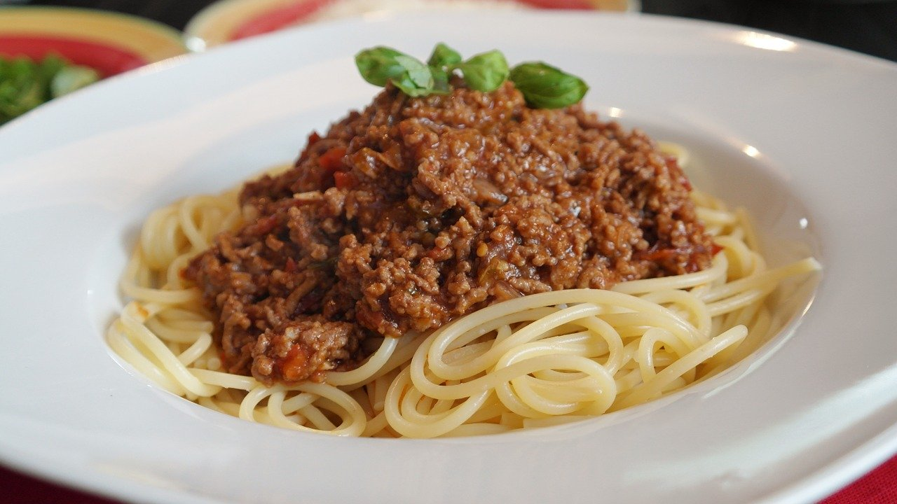

簡単ボロネーゼ

材料 2人分
- パスタ
- 2人分
- ひき肉
- 160g
- 玉ねぎ(みじん切り)
- 1/4個
- にんにく(みじん切り)
- 1片
- オリーブオイル
- 大さじ1
- 塩胡椒
- 少々
- カットトマト缶
- 1/2缶
- ケチャップ
- 大さじ2
- 中濃ソース
- 大さじ1
- 水
- 400cc
- コンソメ
- 小さじ1/2
作り方
1
フライパンにオリーブオイルを入れて熱し、にんにく、合いびき肉を加えて炒めます。
2
色が変わってきたら塩胡椒をして玉ねぎを加えて炒めます。
3
しんなりしてきたらトマト缶、ケチャップ、中濃ソース、水、コンソメを加えて軽く混ぜます。
4
煮立ったら弱火にしてパスタを折り入れて蓋をし、使用するパスタの表記の茹で時間より1分長く加熱します。
5
蓋をとり強火にし、水気を飛ばしてオリーブオイルを回しかけて全体になじませます。
6
塩胡椒でで味を調えたら完成です。お好みで粉チーズをかけても◎。